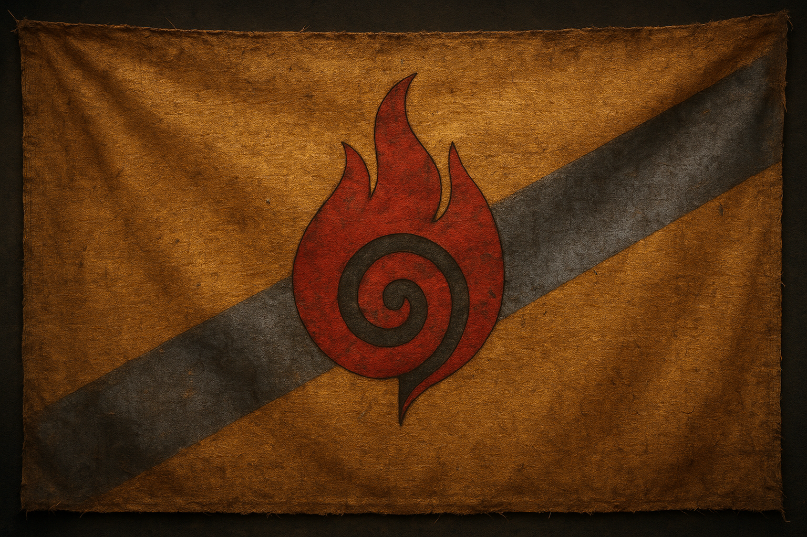
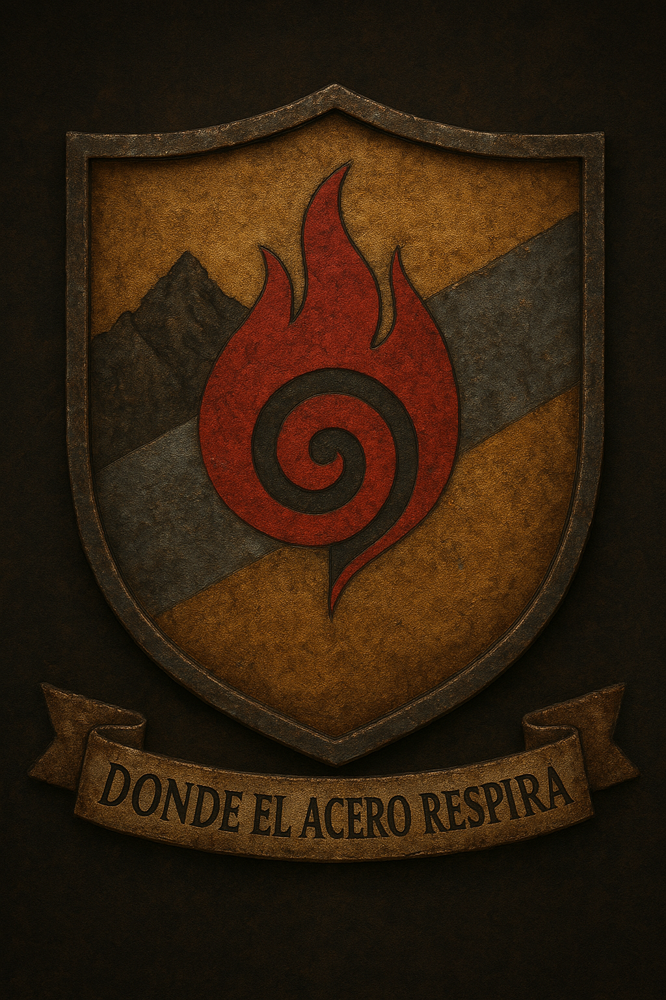

El país se encuentra sobre una meseta rodeada por los Montes Drahim, una muralla natural de roca negra que lo protege del Desierto Toxico, donde el aire mismo devora la vida. Por su centro fluye el rio Vhalen, un cauce de agua plateada que alimenta los valles fértiles y mantiene vivo al pueblo. El río nace en las montañas del norte y recorre unos 280 kilómetros hasta desembocar en el Lago Istren, un espejo de agua que muchos llaman "el corazon de Kaedrûn".
Población y asentamientosKaedrûn cuenta con unos 10.800 habitantes, repartidos en pocas comunidades resistentes:
Thraen, la capital, una ciudad amurallada de acero oxidado y piedra negra.
Valsha, al sur, donde se cultiva el poco grano que sobrevive al clima arido.
Dru'mor, escondida en las montañas, famosa por sus minas de hierro y cobre.
Cultura y sociedadKaedrûn es gobernado por el Consejo de Clanes, donde cada familia antigua envía un representante. Las decisiones se toman por voto y por honor: quien traiciona un acuerdo pierde su nombre y su clan. Su cultura gira en torno a la resistencia, la union con la tierra y la reconstrucción. La tecnologia es improvisada: motores de chatarra, energía hidráulica del Vhalen, poleas y forjas movidas por vapor. Su religión, el Culto al Fuego Interno, no adora a dioses, sino a la llama interior de cada ser humano: el fuego que nunca debe apagarse. El Kaerish, su lengua, es gutural y ritmica. Las palabras suenan como martillazos: cortas, duras, llenas de fuerza. La bandera
La bandera de Kaedrûn esta hecha de tela ocre desgastada, simbolo de la tierra que aún los sostiene. Una franja diagonal gris metalizada cruza el paño, recordando el acero que les permitio sobrevivir. En el centro arde la espiral roja del Fuego Interno, envuelta por un circulo negro. Los bordes rotos y las manchas de hollin cuentan su historia mejor que cualquier libro: cada desgarro es una batalla superada.
El escudo nacional esta dividido en tres campos:
Montañas negras en la parte superior, representando los Montes Drahim.
Un rio plateado en el centro, simbolo del Vhalen y la vida que fluye.
Una llama roja en la base, el fuego que nunca se extingue.
A ambos lados se alzan los guardianes de los clanes, dos bestias hibridas mitad lobo, mitad cuervo. Su lema, grabado en la base del escudo, dice:
Gentilicio: kaedrûniano / kaedrûniana
Moneda: el Vhal, fabricado con metal reciclado
Himno: Ecos del Acero, un canto tribal acompañado de tambores y cuernos
Simbolo nacional: la espiral roja del Fuego Interno
Kaedrûn no es un reino prospero ni vasto, pero es un lugar que se niega a morir. Cuando el mundo se desmoronó, ellos reconstruyeron el suyo con hierro, sudor y fe. Y mientras el fuego arda en sus forjas, Kaedrûn seguira en pie.